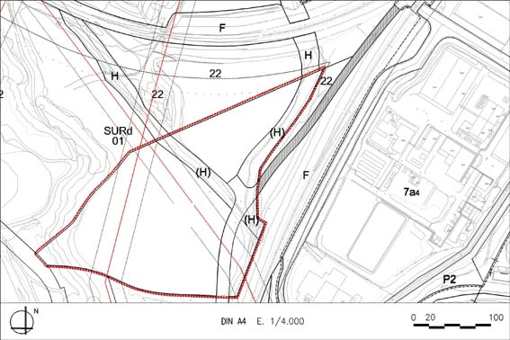

SURd 01 “Can Galí” (Sòl Urbanitzable Delimitat SURd – 01)

Objectiu: Desenvolupament del sector previst al PGOU 92, tot i respectant el sistema hidràulic i adaptat a la nova cartografia
Règim del sòl: Sòl Urbanitzable Delimitat (SURd)
| Superfície del sector: Ordenació (plànol indicatiu) Sistemes urbanístics: Sist. Hidràulic (H) Altres sistemes Altres cessions Zones edificables: Industrial aïllada en parcel·la petita amb alçada lliure (clau 7a4) |
49.813 m2s 6.114 m²s s/ DL 1/2005 i D 305/2006 10% de l’aprofitament urbanístic del sector 30.283 m2s |
Coeficient d’edificabilitat bruta (CEB) |
0,486 m2st/m2s |